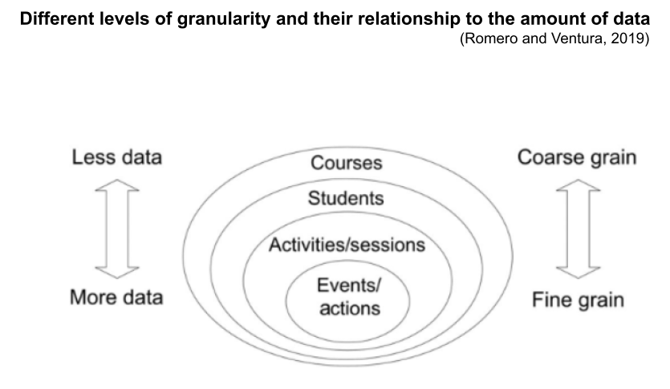
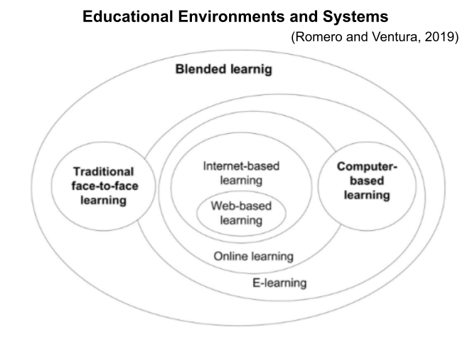
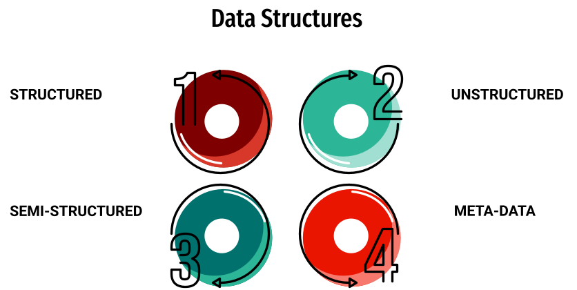
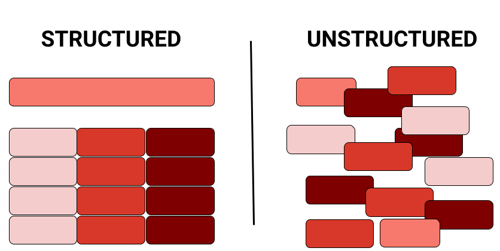
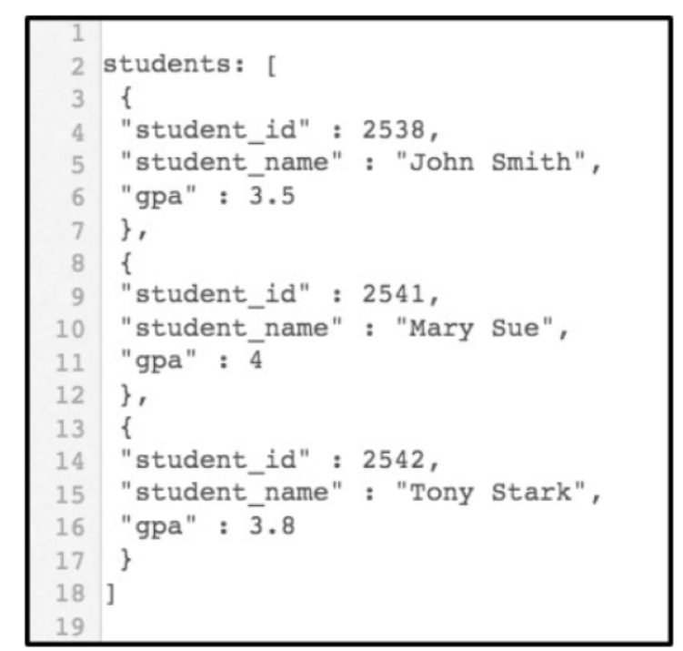
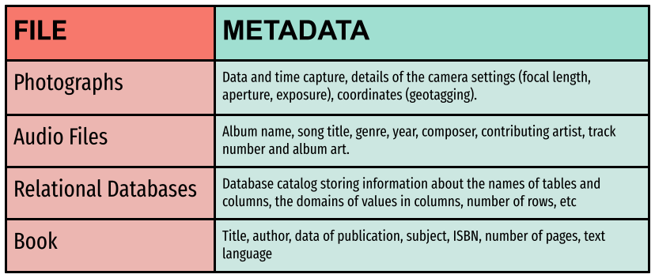

# A tibble: 603 × 30
student_id course_id total_points_possible total_points_earned
<dbl> <chr> <dbl> <dbl>
1 43146 FrScA-S216-02 3280 2220
2 44638 OcnA-S116-01 3531 2672
3 47448 FrScA-S216-01 2870 1897
4 47979 OcnA-S216-01 4562 3090
5 48797 PhysA-S116-01 2207 1910
6 51943 FrScA-S216-03 4208 3596
7 52326 AnPhA-S216-01 4325 2255
8 52446 PhysA-S116-01 2086 1719
9 53447 FrScA-S116-01 4655 3149
10 53475 FrScA-S116-02 1710 1402
# ℹ 593 more rows
# ℹ 26 more variables: percentage_earned <dbl>, subject <chr>, semester <chr>,
# section <chr>, Gradebook_Item <chr>, Grade_Category <lgl>,
# FinalGradeCEMS <dbl>, Points_Possible <dbl>, Points_Earned <dbl>,
# Gender <chr>, q1 <dbl>, q2 <dbl>, q3 <dbl>, q4 <dbl>, q5 <dbl>, q6 <dbl>,
# q7 <dbl>, q8 <dbl>, q9 <dbl>, q10 <dbl>, TimeSpent <dbl>,
# TimeSpent_hours <dbl>, TimeSpent_std <dbl>, int <dbl>, pc <dbl>, uv <dbl>Learning Analytics Workflow
LAW Module 1: Conceptual Overview
Welcome to Learning Analytics Workflow
Learning Analytics Workflow (LAW) is designed for those seeking an introductory understanding of learning analytics using basic R programming skills, particularly in the context of STEM education research.
It consists of consists of four modules. Each module of LAW includes:
- Essential readings
- Conceptual overview slidedeck
- Code a-long slidedeck
- Case study activity that correlates with the Learning Analytics workflow
- Optional badge activity
Module 1 Objectives
By the end of this module:
- Types of Learning Environments:
- Learners will be able to identify and describe different types of learning environments, explaining their unique features and applications in educational research.
- Characteristics of Data:
- Learners will gain proficiency in recognizing and categorizing various data formats commonly used in educational research by the end of this section.
Essential readings:
- Learning Analytics Goes to School, (Ch. 2, pp 16 - 28 ) By Andrew Krumm, Barbara Means, Marie Bienkowski
- Learning Analytics Goes to School, (Wrangle Ch. 3, pp. 38 - 43) By Andrew Krumm, Barbara Means, Marie Bienkowski
- Educational data mining and learning analytics: An updated survey, By Romero & Ventura
- Optional Readings on Stakeholders in folder By Gašević et al., 2022 and Sun et al., 2019
Education Data
Interaction between instructors and students
Administrative data
Demographic data
Student affectivity

Types of Learning Environments
- Face to Face
- Blended
- Digital (computer aided) Learning Systems

Digital Learning Environments (Computer Aided)
Adaptive and Intelligent Hypermedia System (AIHS)
Intelligent Tutoring System (ITS)
Serious Games and Simulations
Learning Management System (LMS)
AI-driven virtual tutors and chatbots
Massive Open Online Course (MOOC)
Test and quiz system
Sensor Wearable learning systems and Virtual
Augmented reality systems
Multimodal Computer Aided Learning
Discussion
Choose one category (Interaction, Administrative, Demographic, or Student Affectivity).
Share an example of how data in this category can be collected.
Discuss the potential impact of this data on educational decision-making.
Characteristics of Data




Stakeholders
- Students
- Parents and Guardians
- Teachers
- School Administrators
- District and State Education Officials
- Policy Makers and Government Agencies
More stakeholders
- Educational Technology Providers
- Educational Researchers
- Community Members and Organizations
- Non-Profit Organizations
- Employers and Industry Representatives
- Funding Agencies and Foundations
Discussion
What challenges arise from the different needs and priorities of these stakeholder groups when it comes to data use and management?
How can these challenges be addressed to ensure that data is used ethically and effectively to improve education for all students?
What’s Next?
- Explore the R Basics column of Posit Cloud’s Recipes
- Complete the Prepare and Wrangle part of the case study
- Complete the Foundations of Learning Analytics badge
- Do essential readings for the next module